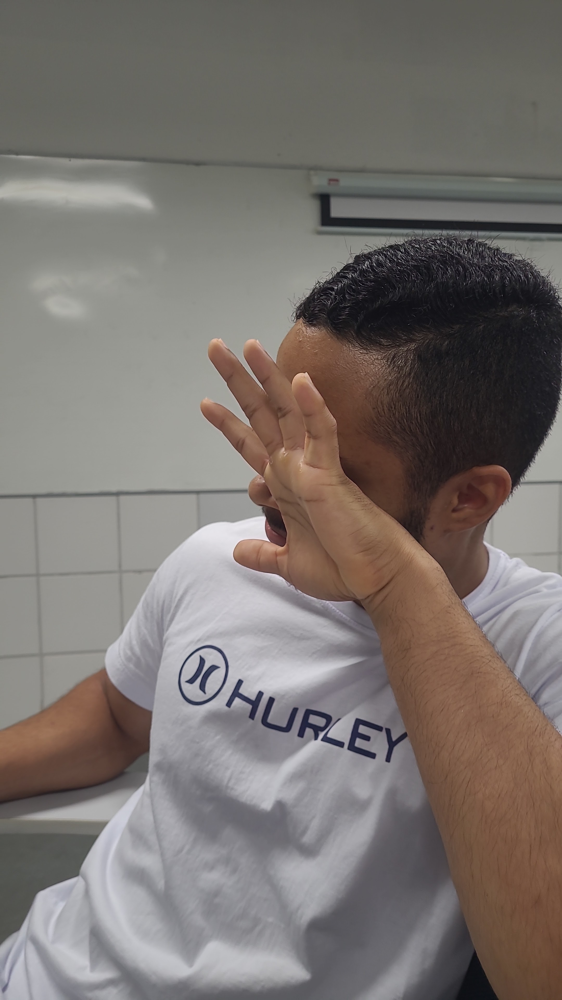
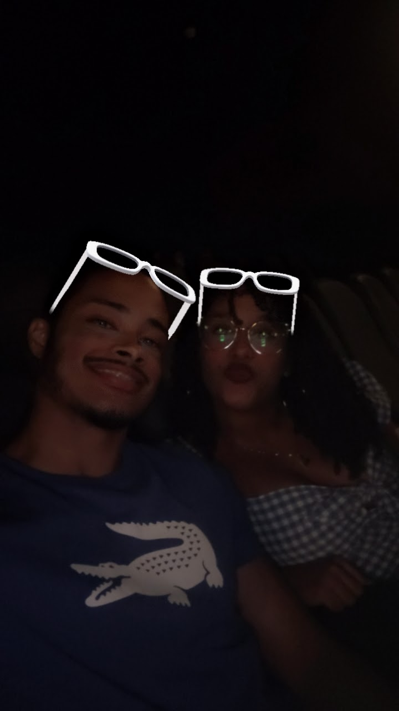
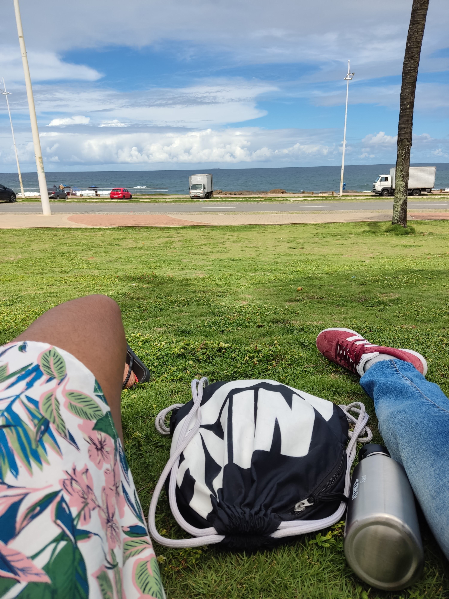
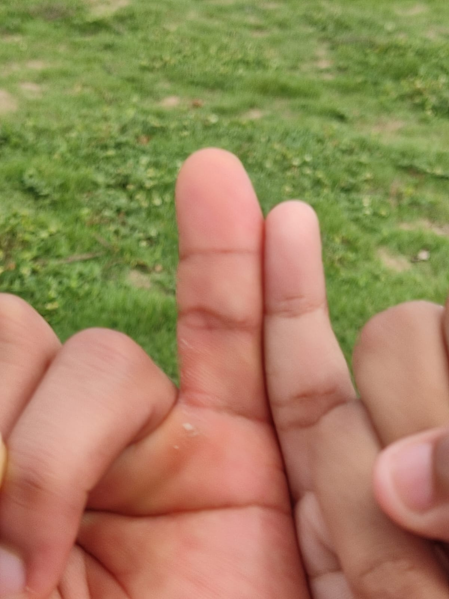
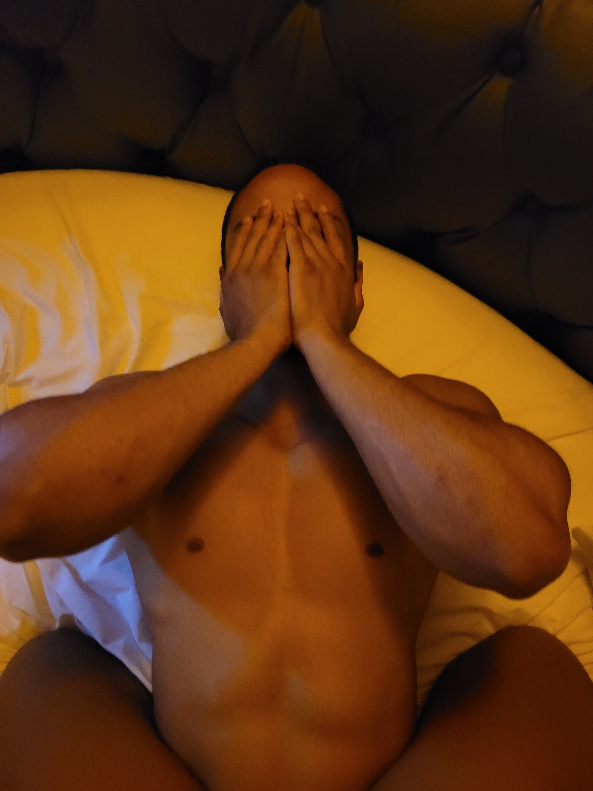

PARA A MULHER QUE EU AMO...
MEUS MAIS SINCEROS SENTIMENTOS SOBRE O MEU AMOR POR TI.
Não existe script pronto e nem mesmo uma peça de teatro muito bem organizada que iria conseguir formular tão bem um início
de texto para que chegasse aos pés da nossa história.
Um evento surreal de emoções. Um único evento que foi capaz de gerar todo o prazer que tenho hoje. Naquele corredor de uma faculdade,
eu senti um cheiro novo, um cheiro que me fisgava e despertava a curiosidade de conhecê-la. Em somente algumas palavras, eu
disse a mim mesmo: - É, é ela, essa é a pessoa que minha alma estava gritando para que eu não deixasse escapar. E em um estalar
de dedos, meu coração, alma, espirito e mente te queriam. Queriam saber como era o coração de uma mulher que eu já sentia que
era especial a mim. Passei a ser fiel a você, passei a ser fiel a alguém que eu nem conhecia direito e tão pouco tinha um contato.
E quando finalmente peguei meu celular e tive a iniciativa de seguir um tal de...
Foi apenas uma mensagem... Uma troca de mensagens para que pudessemos ter a prova e o gosto do que o encontro de nossas
almas. Foi uma explosão interna, onde somente nossos espíritos sentiram. Nossas atitudes falarão mais altos que qualquer inse
gurança de um passsado doloroso e frio. Nosso amor gritou e quebrou o selo que estava grudado nos prendendo a uma linha temporal
que não deveria existir. Rompemos o lacre e nossas almas, que estavam desejando a outra, finalmente se uniram.

Nossa primeira foto, o encontro das duas almas que estavam vagando pelo mundo. Um frio na barriga imenso por estar conhecendo
o amor da minha vida.

Nosso primeiro encontro. Aqui, eu estava nervoso mas também muito tranquilo. Estava numa calmaria e nervosismo
por ser minha primeira vez em um encontro. Eu estava mais apaixonado por você, mais ainda, incrível como nosso primeiro
encontro foi perfeito e em como meu coração saltitava a cada andar, palavra ou conversa que estavámos tendo. Eu passei a ter
a certeza de que você era o amor da minha vida, mais ainda do que eu estava tendo.


O Costa Azul finalmente pôde ver a hístoria do melhor casal começando em primeira mão. Primeira vez sentando
naquela grama e sentindo as primeiras mordidas de formigas. Seria em um bairro ao lado que teria o tão sonhado pedido. Pequenas flores,
que, se similavam como girassóis.

Errei um pouco as ordens de acontecimento. Mas eu nem preciso comentar desse dia aqui...
O resto desta história está em um aplicativo Verde de mensagem.